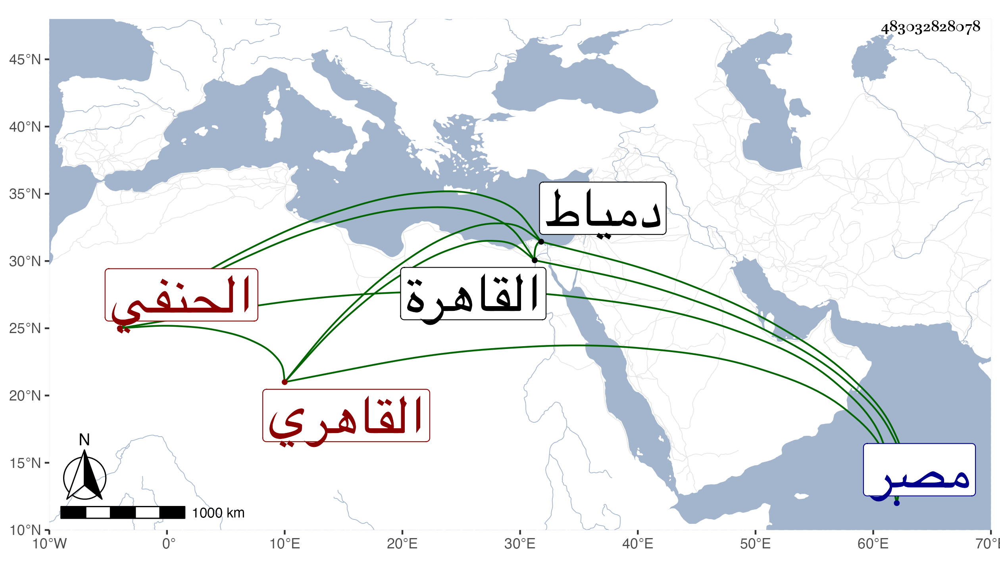

0902Sakhawi.DawLamic.ITO20230111-ara1.EIS1600.483032828078
Biography ID: 483032828078
إبراهيم بن محمد بن دقماق صارم الدين القاهري الحنفي مؤرخ الديار المصرية في وقته ودقماق كان أحد الأمراء الناصرية محمد بن قلاون وهو جد أبيه فهو محمد بن ايدمر بن دقماق . قال شيخنا في معجمه ولد في حدود الخمسين وسبعمائة واعتنى بالتاريخ فكتب منه الكثير بخطه وعمل تاريخ الإسلام وتاريخ الأعيان وطبقات الحنفية وغير ذلك وامتحن في سنة أربع وثمانمائة بسبب شيء قاله في ترجمة الشافعي وكان يحب الأدبيات مع عدم معرفته بالعربية ولكنه كان جميل العشرة كثير الفكاهة حسن الود قليل الوقيعة في الناس وزاد في أنبائه عامي العبارة وأنه ولي في آخر الأمر إمرة دمياط فلم تطل مدته فيها ورجع إلى القاهرة فمات بها في ذي الحجة سنة تسع وقد جاوز الستين . قلت وهو أحد من اعتمده شيخنا في أنبائه المذكور قال وغالب ما أنقله من خطه ومن خط ابن الفرات عنه وقد اجتمعت به كثيرا ثم ذكر أنه بعد ابن كثير عمدة العيني حتى يكاد يكتب منه الورقة الكاملة متوالية وربما قلده فيما يهم فيه حتى في اللحن الظاهر كاخلع والمحنة المشار إليها قد ذكرها شيخنا في سنة خمس لا أربع وعبارته وفيها أثناء السنة كائنة ابن دقماق وجد بخطه خط صعب على الإمام الشافعي فطولب بذلك من مجلس القاضي الشافعي فذكر أنه نقله من كتاب عند أولاد الطرابلسي فعزره القاضي جلال الدين بالضرب والحبس قال ولم يكن المذكور يستأهل ذلك وقال غيره أنه تزيا بزي الجند وطلب العلم وتفقه يسيرا بجماعة ومال إلى الأدب ثم حبب إليه التاريخ وتصانيفه فيه جيدة مفيدة واطلاعه كثير واعتقاده حسن ولم يكن عنده فحش في كلامه ولا في خطه وقال المقريزي أنه أكب عليه حتى كتب فيه نحو مائتي سفر من تأليفه وغير ذلك وكتب تاريخا كبيرا على السنين وآخر على الحروف وأخبار الدولة التركية في مجلدين وسيرة للظاهر برقوق وطبقات للحنفية وامتحن بسببها وكان عارفا بأمور الدولة التركية مذاكرا بجملة أخبارها مستحضرا لتراجم أمرئها ويشارك في غيرها مشاركة جيدة وقال أنه كان حافظا للسانه من الوقيعة في الناس لا تراه يذم أحد من معارفه بل يتجاوز عن ذكر ما هو مشهور عنهم مما يرمى به أحدهم بل يعتذر عنه بكل طريق صحبته مدة وجاورني سنين وهو عنده في عقوده أيضا .
